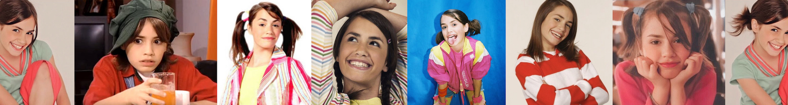
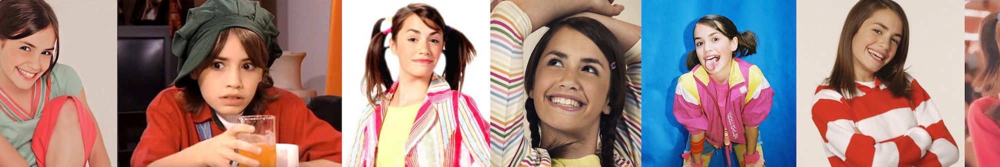

Mariana Espósito, nació el 10 de octubre de 1991 en Buenos Aires, Argentina. Hija de María José y Carlos tiene 2 medios-hermanos mayores: Ana Laura y Patricio por parte de su padre. Vivió su primer año de vida en su barrio natal Parque Patricios. Trás cumplir 1 año se traslada con su familia a Santiago del Estero, lugar de nacimiento de sus padres. Cuando tenía 5 años de edad vuelven a mudarse a Buenos Aires, esta vez al barrio de Banfield donde están viviendo actualmente. Su infancia transcurrió sin problemas e hizo la primaria en el "Instituto San Vicente Paul".

Cuando Mariana cumplió 9 años se armó de valor para decirle a sus padres que su sueño era ser actriz y cantante y les preguntó si podía inscribirse en un casting para un nuevo programa de televisión pero ambos se lo negaron. Tuvo que esperar un año para que se le diera otra oportunidad... Cuando tenía 10 años recién cumplidos se escapó de su casa y una amiga de la familia la llevó a inscribirse a un casting para un programa llamado "Corazones" por una ayuda del destino se equivocaron de dirección y fueron a parar a la convocatoria de Cris Morena para su nuevo proyecto Rincón de Luz, del cual ella quedó seleccionada para interpretar a Malena/Coco, una nena que tiene que disfrazarse de varón para escaparse de los maltratos de su tía. Ella agradece haberse tomado el ómnibus incorrecto ya que por problemas el programa "Corazones" nunca se realizó. Sus padres la autorizan a actuar siempre y cuando no se olvide de los estudios.